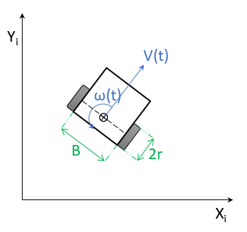
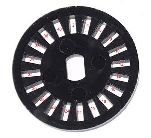

|
Smart Car Controller
1.0
Library to manage a two wheeled robotic vehicle (DC Motors)
|
|
Smart Car Controller
1.0
Library to manage a two wheeled robotic vehicle (DC Motors)
|
An application using the library needs to pass a few physical constants to the MD_SmartCar::begin() method that allows the library to configure vehicle control parameters.
Note that the units of length are specified in millimeters. However, alternative units (eg inches or centimeters) may be used AS LONG AS ALL LENGTHS ARE SPECIFIED IN THE SAME UNITS, as the units all cancel out in the calculations.
Two physical constants need to be directly measured from the vehicle:
These two constants are shown as 2r and B in the figure below.


Next: Confirming Motor Setup